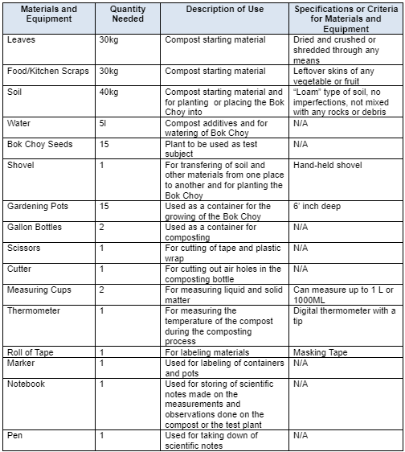

The Effectiveness of Leaf and Food Scrap Mix Compost on Bok Choy
Background and Significance of the Study
In this study, we aim to find a way to help our partner institution efficiently create compost. According to the NRDC, Composting is the natural process of recycling things like food scraps and leaves into fertilizer. This is a highly beneficial practice to communities and to the environment as it prevents soil erosion as it retains large amounts of water, which would prevent things like flooding in communities. It also helps conserve water due to the fact it is able to retain and transfer large amounts of water, promotes healthy plant growth as it enriches the soil and suppresses a number of plant diseases, and reduces waste since most compost is created with waste like food scraps. This is great news to any community, as it not only helps with rainwater management; it also gives the community an array of benefits like reduced community waste to dispose or manage of, enriched soil fit for vegetation and promoted healthy plant growth. With the power of composting, they would be able to possibly create a food source stable enough that they could rely on instead of spending money on buying groceries. If they could grow enough of these vegetables and plants, they could even explore the idea of selling these in order to create a profit that could be used in order to further improve the community. It also helps combat climate change, as it helps strengthen ecosystems to battle against the rising temperatures and cuts greenhouse gasses in the atmosphere down. Even though composting is very beneficial practice, many people opt to not do it and instead buy artificial fertilizers due the amount of time it takes to compost. That is why studies in possible accelerants to speed up this natural process would be very beneficial, as many more people would opt to practice this and help benefit the environment and their communities. The more people practice composting and using the natural fertilizer they create from it, the more benefits our environment and our society as a whole will experience. We hope that this research would be of great help to our partner institution, Madrasah, as they can source their daily supply of provisions from a stable source of food from a vegetable garden. While researching information on our partner institution, we had found out that they were asking for donations for provisions for daily supplies such as food for the children they teach. This had particularly piqued our interest, as this would mean the institution only has a limited supply of food. We had put ourselves to the task to look for a possible solution to this, and had come up with the solution of the creation of a vegetable or plant garden. This would provide the institution with access to more food, and could possibly save them a lot of money compared to buying groceries frequently. But the process of growing plants is not all that easy, and there are issues like the soil not being fit for vegetation or the plants would not be able to defend themselves from any potential diseases. Composting would be a great fix for this, and would save the institution a lot of money as it would help them grow healthy plants and vegetables without having to buy a pricey fertilizer. Composting can be different from each other so we decided to focus on materials that can be found in every household as compost. We have found that food scraps and dried leaves are very common and can be used as compost, these materials are cheap and can mostly be recycled and the nutrients in the material are enough to be used as fertilizer to help the Bok choy (Brassica rapa) grow which is the plant we will be focusing on. This research can greatly benefit the Madrasah of solving their issue of limited supply of food. With this research and study, we hope to prove its effectiveness and showcase how leaf mix and food scraps compost on plants.
Statement of the Problem
How will Leaf and Food Scrap Mix Compost affect the height and number of leaves on Bok choy?
Hypothesis
If more leaf and food scrap mix compost is used, then the Bok Choy will grow taller and have more leaves than the Bok Choy without leaf and food scrap mix compost.
Review of Related Literature
Compost as quoted by ADM in general is a multitude of decomposed organic material such as leaves, shredded twigs, and kitchen scraps. Compost has been regarded by experts in Syngenta as one of the most basic yet effective ways to recycle organic matter such as leaves and food scraps, into a valuable fertilizer. This is wonderful for plant growth as said by workers of Agworld by adding fertilizer which provides plants with nutrients that will boost the growth of the plant and the health of said plant. Aside from being an effective fertilizer for plants, it is very beneficial to the soil and the environment in general as well. According to the US Composting Council, compost improves the soil’s ability to retain water and nutrients. It does this by increasing the soil's cation exchange capacity, which is another benefit that the compost provides to the soil.
Our group will focus on the growth of Bok Choy. From what we have learned from our sources, the nutrients the Bok Choy needs to gain optimal growth are nitrogen, potassium, and phosphorus. It helps the plant maintain its green color, produces leaves and ensures energy through photosynthesis. The Bok choy metabolizes nitrogen through cell membranes in roots in the form of amino acid or nitrate. Phosphorus helps develop new roots and help fight diseases. Phosphorus is metabolized from soil solutions and moves to the root surface through diffusion. Potassium helps the plant develop strong stems and helps the plant grow faster. Potassium is metabolized through the roots where potassium is in the form of ions which dissolves in water.
The type of compost that will be able to deliver the nutrients is leaf and food scrap compost mix. Food scrap mix is rich in nutrients such as potassium, nitrogen, phosphorus, magnesium, calcium, and many other nutrients as well. This is because it is composed of many organic things that are rich with these types of nutrients—and an example is egg shells, banana peels, vegetable scraps, and etc. Because food scrap mix can deliver the nutrients needed by the Bok Choy along with multiple other nutrients, it is one of the best types of compost we can use to deliver nutrients to the Bok Choy. We will be adding crushed and dried/dead leaves to the compost pile as it also has nitrogen content and it will greatly help with the composting process. The composting process will take approximately 1 month to complete, and the materials needed for it are food scraps, dried and shredded leaves, and soil. We will be using the layering method, each layer alternating (first soil, then food scraps, then leaves, then soil again, etc.). We will be using a gallon bottle to place our compost in, and we will be mixing the compost once every week to speed up the composting process.
Composting food mix improves soil health and lessens possible erosion. This compost contains the three primary nutrients needed by plants which are potassium, nitrogen, and phosphorus. By placing compost onto the soil that the crop is planted in, it is able to deliver these nutrients to the plant.
Leaf mix does a wonderful job of guarding plants from drought damage to plants, due to its water-holding capacity. It also improves soil tilth, making it easier to cultivate the soil. The cation exchange capacity of soils is increased, cousin the soil to hold an abundance of plant nutrients for longer times. Also, this added organic matter provides a food source for desirable soil microorganisms.
The most effective way to use compost to successfully deliver benefits to the plant is direct composting. Direct composting is where you make a trench and fill it up with compost. In this way, the compost will directly touch the soil, and the nutrients from the compost can be quickly delivered to the plant and make the soil healthier. This method can help the environment of the Bok Choy be helpful for its growth.
Variables
Independent Variable
- Amount of Leaf Mix Compost
- Amount of Food Scrap Mix Compost
Dependent Variable
- The Height of the Bok Choy
- The Number of leaves on the Bok Choy
Controlled Variable
- Amount of Sunlight
- Frequency of Watering Bok Choy
- Amount of Bok Choy
- Size of Pots
- Amount of Soil in Pots
- Type of Soil in Pots
- Amount of Leaf Used in Compost Mix
- Amount of Food Scraps Used in Compost Mix
- Frequency of Turning of Compost Mix
- Size of Container of Compost Mix
Treatments
Control Set-up
Control group to serve as a reference or benchmark to compare the results of the experimental group to. Contains Bok Choy planted in 1000ml or 1kg of soil. The independent variable, food scrap and leaf mix compost, is not present or added in this set-up. Will be watered with 100ml of water and observed once a week.
No. of Trials or Replicates
3
Experimental Set-up 1
Experimental setup that contains Bok Choy planted in 1000ml or 1kg of soil with no leaf mix compost. 200ml of the independent variable, food scrap and leaf mix compost,will be added in this set-up. Will be watered with 100ml of water and observed once a week.
No. of Trials or Replicates
3
Experimental Set-up 2
Experimental setup that contains Bok Choy planted in 1000ml or 1kg of soil with no leaf mix compost. 400ml of the independent variable, food scrap and leaf mix compost,will be added in this set-up. Will be watered with 100ml of water and observed once a week.
No. of Trials or Replicates
3
Experimental Set-up 3
Experimental setup that contains Bok Choy planted in 1000ml or 1kg of soil with no leaf mix compost. 600ml of the independent variable, food scrap and leaf mix compost,will be added in this set-up. Will be watered with 100ml of water and observed once a week.
No. of Trials or Replicates
3
Experimental Set-up 4
Experimental setup that contains Bok Choy planted in 1000ml or 1kg of soil with no leaf mix compost. 800ml of the independent variable, food scrap and leaf mix compost,will be added in this set-up. Will be watered with 100ml of water and observed once a week.
No. of Trials or Replicates
3
Experimental Data to be Measured or Observed
The Appearance and Color of the Compost
The appearance and color of the layers in the compost bottle will be observed once every week or once every 7 days.
This is to help determine if the composting process is going well and that there is no issue with the compost through the appearance and color of the layers in the compost bottle.
Number of leaves of the Bok Choy
The number of leaves of the Bok Choy will be counted after maturation
One of the dependent variables of the experiment. Is a measurement that is related to plant growth.
Height of the Bok Choy
The height of the Bok Choy will be measured in centimeters before and after maturation.
One of the dependent variables of the experiment. Is a measurement that is related to plant growth.
Material and Equipment Needed

Procedure
Preparation of starting materials:
1. Prepare the following:
● 1 Shovel
● 2 Measuring Cups
● 2 Gallon Bottles
● 1 Pair of Scissors
● 1 Cutter
● 1 Marker
● 1 Roll of Tape
● Food/Kitchen Scraps
● Loam Soil
● Shredded Dried Leaves
● Water
● Plastic Wrap
● Rubber Bands
● Gardening Materials
2. For the kitchen scraps, collect kitchen scraps at the end of every day 3 days before the start of the experiment. Keep in an air-tight container. Make sure that they are all cut up or crushed into small pieces.
3. For the leaves, collect as much dried leaves as you can and crush or shred them. Keep in a container or bag.
4. For the soil, make sure that it is not too dry or too damp and that there are no rocks or other imperfections in the soil.
5. For the water, make sure that it is free from impurities or imperfections and that it is not contaminated.
6. For the gallon bottles, cut at least 1 inch of the bottom part of the bottle. Do this on both bottles.
Process of Composting
1. Dig at least 2 inches deep in the soil and place the bottles in the soil.
2. Measure 200 ML of shredded dried leaves.
4. Place 100ML of dried leaves into each bottle, dividing the amount of leaves equally between the two.
5. Measure 200ML of food scraps.
6. Place 100ML of food scraps into bottles A and B each, dividing the amount of scraps equally between the two.
7. Add 200ML of soil on top of the food scraps and repeat the process (soil, dried leaves, food scraps) and leave a small space inside the top layer of the bottle.
8. Measure 100ML of water.
9. Pour 50ML of water into bottles A and B, dividing the amount of water equally between the two.
10. If too wet, let it dry out for a while. Check on it after 30 minutes. If too dry, pour more water until damp.
11. Cut up pieces of tape. Using these pieces of tape and the marker, label each layer and label the top to mark the soil level as well.
12. Place the bottles in a warm and sunny place.
13. Twice a week, mix the compost pile to speed the composting process. Reseal after mixing.
Preparing the Test Plants and Plant Soil
1. Gather and prepare the following materials:
● Shovel
● Measuring Cups
● Pots
● Loam Soil
● Bok Choy
● Marker
● Tape
● Notebook
● Pen
2. Measure 1000 ml of soil.
3. Place soil in pots, 1000 ml each. Fill till the third line in the pot.
4. Plant the Bok Choy seed, 1 in each pot.
5. Cut pieces of tape and put one one each pot.
6. Label the pots for the control group as “CON A, CON B, CON C”, the pots for experimental setup 1 as “EXP1 A, EXP1 B, EXP1 C”, the pots for experimental setup 2 as “EXP2 A, EXP2 B, EXP2 C”, the pots for experimental setup 3 as “EXP3 A, EXP3 B, EXP3 C”, and the pots for experimental setup 4 as “EXP4 A, EXP4 B, EXP4 C”.
Making observations and/or measurements about the Compost
1. Gather and prepare the following materials:
● Notebook
● Pen
● Scissors
● Thermometer
2. Once a week, observe the pile and take notes on any significant changes (ex. Did the sizes change? Any noticeable changes to the organic material? What does the inside of the bottle look like? etc.).
3. Open the cap of the bottle and stick the thermometer into the opening, and make sure that the tip of the thermometer reaches the topmost layer of the compost. Take note of the temperature.
4. Take the thermometer out. Reseal the container.
5. If the soil begins to dry, add water to moisten.
6. After 4 weeks, take the compost out of the bottles and observe any changes (ex. What happened to the organic matter? What is the state of the compost?) . Take note of these changes. Put the compost back into its respective containers. Make sure to reseal it.
Dosage and Frequency of Compost Application to the Test Plants
1. Gather and prepare the following materials:
● Gardening Materials
● Compost
● Measuring Cups
2. Using the gardening materials needed, make a small hole in the soil of each plant.
3. Take out the compost in the bottle and measure 600 ml of said compost.
4. Using the gardening materials needed, place the measured compost in the hole made in pots “EXP1 A, EXP1 B, EXP1 C”. Divide it equally, placing 200ml of the compost only in the hole.
5. Cover up the hole with a thin layer of dirt.
6. Take out the compost in the bottle and measure 1200 ml of said compost.
7. Using the gardening materials needed, place the measured compost in the hole made in pots “EXP2 A, EXP2 B, EXP2 C”. Divide it equally, placing 400ml of the compost only in the hole.
8. Cover up the hole with a thin layer of dirt.
9. Take out the compost in the bottle and measure 1800 ml of said compost.
10. Using the gardening materials needed, place the measured compost in the hole made in pots “EXP3 A, EXP3 B, EXP3 C”. Divide it equally, placing 600ml of the compost only in the hole.
11. Cover up the hole with a thin layer of dirt.
12. Take out the compost in the bottle and measure 2400 ml of said compost.
13. Using the gardening materials needed, place the measured compost in the hole made in pots “EXP4 A, EXP4 B, EXP4 C”. Divide it equally, placing 800ml of the compost only in the hole.
14. Cover up the hole with a thin layer of dirt.
15. Do this once every week.
Making observations and/or measurements about the Test Plants
1. Gather and prepare the following materials:
● Notebook
● Pen
● Measuring Tape
2. Observe the test plants and note any visible changes. (ex. Did the color of the Bok Choy change in any way?)
3. Count the leaves of the Bok Choy of each pot. Take note of the numbers in the notebook.
4. Take out the measuring tape and measure the height of the Bok Choy of each pot. Take note of each measurement in the notebook.
5. Do this before and after maturation of the Bok Choy.
Bibliography
8 Methods of Composting. (2022, September 22). Direct Compost Solutions. Retrieved October 3, 2022, from https://directcompostsolutions.com/8-methods-composting/#:%7E:text=Direct%20Compost%20is%20simply%20digging,it%20too%20has%20its%20limitations. - Helped us know the best and most effective way to apply compost to deliver nutrients and benefits to our plant.
Alonso, N. (2021, April 23). How to prepare dead leaves for compost. Home Guides | SF Gate. https://homeguides.sfgate.com/prepare-dead-leaves-compost-24123.html - Helped us know what material would be best for our compost.
American Chemical Society. (2019, January 21) Chlorophyll,
Arafat, R. (2022). Cellulose in Plants Structure & Function. Study.com. https://study.com/learn/lesson/cellulose-in-plants-structure-function-what-is-cellulose.html - Helped us identify how it is part of the plant structure and its purpose.
Barber, S. A. (2015). Mechanism of Potassium Absorption by Plants. The Role of Potassium in Agriculture, 293–310. https://doi.org/10.2134/1968.roleofpotassium.c14 - Helped us know what nutrients our plant needed and how it affects the plant.
Barber, S. A. (2015b). Mechanism of Potassium Absorption by Plants. The Role of Potassium in Agriculture, 293–310. https://doi.org/10.2134/1968.roleofpotassium.c14 - Helped us understand what potassium is and how it works on plants.
Best Fertilizer for Bok Choy: Homemade, Organic, Natural, Liquid, NPK, When and How to Apply. (2022, March 14). Gardening Tips. Retrieved October 3, 2022, from https://gardeningtips.in/best-fertilizer-for-bok-choy-homemade-organic-natural-liquid-npk-when-and-how-to-apply#:%7E:text=It%20needs%20rich%20soil%20with,and%20tolerate%20inappropriate%20weather%20conditions.- Helped us know what nutrients our plant needed and how it affects the plant.
Best Fertilizer For Pechay. (n.d.). Justagric. https://justagric.com/best-fertilizer-for-pechay/ - Helped us know what nutrients our plant needed and how it affects the plant.
Britannica, T. Editors of Encyclopaedia (2018, December 19). oxalic acid. Encyclopedia Britannica. https://www.britannica.com/science/oxalic-acid - Helped us identify how it is part of the plant structure and its purpose.
Britannica, T. Editors of Encyclopaedia (2019, March 7). organic compound. Encyclopedia Britannica. https://www.britannica.com/science/organic-compound - Helped us identify how it is part of the plant structure and its purpose.
Britannica, T. Editors of Encyclopaedia (2022, September 27). glycogen. Encyclopedia Britannica. https://www.britannica.com/science/glycogen - Helped us identify how it is part of the plant structure and its purpose.
Buchholz, D. (n.d.). Nitrogen in the plant. University of Missouri Extension | MU Extension. https://extension.missouri.edu/publications/wq259 - Helped us understand what nitrogen is and how it works on plants.
BYJUS. (2022, February 11). Is cellulose a carbohydrate? Retrieved from https://byjus.com/chemistry/cellulose-a-carbohydrate/ - Helped us identify how it is part of the plant structure and its purpose.
Composting. (1989). Spore, 22, 6–6. http://www.jstor.org/stable/24339554
Franceschi, V. R., & Nakata, P. A. (2005). Calcium oxalate in plants: formation and function. Annual review of plant biology, 56, 41–71. https://doi.org/10.1146/annurev.arplant.56.032604.144106- Helped us identify how it is part of the plant structure and its purpose.
FS117: Using Leaf Compost (Rutgers NJAES). (n.d.). Retrieved October 3, 2022, from https://njaes.rutgers.edu/fs117/ - Helped us know what other benefits our compost would do aside from providing nutrients to our plant.
Haque, A. (2020, May 3). Turn your kitchen waste into plant food. The Business Standard. https://www.tbsnews.net/panorama/turn-your-kitchen-waste-plant-food-76567 - Helped us know what material would be best for our compost.
Heller, A., & Witt-Geiges, T. (2013). Oxalic acid has an additional, detoxifying function in Sclerotinia sclerotiorum pathogenesis. PloS one, 8(8), e72292 https://doi.org/10.1371/journal.pone.0072292 - Helped us identify how it is part of the plant structure and its purpose.
How and when to fertilize pechay. (2020, December 27). Fertilizerfor. Retrieved October 2, 2022, from https://fertilizerfor.com/pechay/ - Helped us know what nutrients our plant needed and how it affects the plant.
How composting works? What is Compost. (n.d.). Retrieved October 4, 2022, from https://commongroundcompost.com/what-is-compost/?fbclid=IwAR1v3AFSYzzhQSZEPzAJeSWgu7mYF3MfmX1Ql51SZd61SiixNZFNa_eGsa4 - Helped us understand what compost is.
How to Direct Compost (Trench Composting). (2021, December 2). The Kitchen Garten. Retrieved October 2, 2022, from https://thekitchengarten.com/how-to-direct-compost/#:%7E:text=What%20is%20Direct%20Composting%3F,compost%20in%20the%20actual%20bed. - Helped us know the best and most effective way to apply compost to deliver nutrients and benefits to our plant.
Hoyle, F., Scanlan, C., & Ryan, L. (2017, November 3). Immobilisation of soil nitrogen in heavy stubble loads. Agriculture and Food | Department of Primary Industries and Regional Development. https://www.agric.wa.gov.au/soil-carbon/immobilisation-soil-nitrogen-heavy-stubble-loads - Helped us understand what nitrogen is and how it works on plants.
https://www.acs.org/content/acs/en/molecule-of-the-week/archive/c/chlorophyll.html - Helped us identify how it is part of the plant structure and its purpose.
https://www.sciencedirect.com/topics/chemical-engineering/chlorophyll - Helped us identify how it is part of the plant structure and its purpose.
Hu, S. (2020, July 20). Composting 101. NRDC. https://www.nrdc.org/stories/composting-101#benefits - Helped us know what other benefits our compost would do aside from providing nutrients to our plant.
Infographic: Choosing the Best Compost Method. (2021, March 14). Gardens That Matter. Retrieved October 3, 2022, from https://www.gardensthatmatter.com/infographic-best-compost-method/ - Helped us know the best and most effective way to apply compost to deliver nutrients and benefits to our plant.
Killpack, S. C., & Buchholz, D. (1993, October). Nitrogen in the environment: Nitrogen cycle. University of Missouri Extension | MU Extension. https://extension.missouri.edu/publications/wq252 - Helped us understand what nitrogen is and how it works on plants.
Koch Agronomic Services. (n.d.). The role of nitrogen in crop production and how to protect it. https://kochagronomicservices.com/knowledge-center/The-Role-of-Nitrogen-in-Crop-Production-and-How-to-Protect-It_2288.aspx - Helped us understand what nitrogen is and how it works on plants.
Leghari, S. J., Wahocho, N. A., Laghari, G. M., HafeezLaghari, A., MustafaBhabhan, G., HussainTalpur, K., ... & Lashari, A. A. (2016). Role of nitrogen for plant growth and development: A review. Advances in Environmental Biology, 10(9), 209-219. - Helped us understand what nitrogen is and how it works on plants.
Medicine LibreTexts. (2020, August 14). 3.1: Organic compounds. https://med.libretexts.org/Bookshelves/Anatomy_and_Physiology/Book%3A_Human_Anatomy_and_Physiology_Preparatory_Course_(Liachovitzky)/03%3A_Molecular_Level-_Biomolecules_the_Organic_Compounds_Associated_With_Living_Organisms/3.01%3A_Organic_Compounds - Helped us identify how it is part of the plant structure and its purpose.
Medicine LibreTexts. (2022, September 8). 5.3: Functions of Lipids. https://med.libretexts.org/Courses/Metropolitan_State_University_of_Denver/Introduction_to_Nutrition_(Diker)/05:_Lipids/5.3:_Functions_of_Lipidz - Helped us identify how it is part of the plant structure and its purpose.
Moe, L. A. (2013). Amino acids in the rhizosphere: From plants to microbes. American Journal of Botany, 100(9), 1692–1705. https://doi.org/10.3732/ajb.1300033 - Helped us identify how it is part of the plant structure and its purpose.
National Center for Biotechnology Information (2022). PubChem Compound Summary for CID 439177, Glycogen. https://pubchem.ncbi.nlm.nih.gov/compound/Glycogen. - Helped us identify how it is part of the plant structure and its purpose.
National Center for Biotechnology Information (2022). PubChem Compound Summary for CID 971, Oxalic acid. https://pubchem.ncbi.nlm.nih.gov/compound/Oxalic-acid. - Helped us identify how it is part of the plant structure and its purpose.
Petruzzello, M. (2021, January 22). compost. Encyclopedia Britannica. https://www.britannica.com/topic/compost - Helped us identify how it is part of the plant structure and its purpose.
Planet Natural. (2019, August 31). How to build a compost pile. https://www.planetnatural.com/composting-101/making/compost-pile - Helped us know what material would be best for our compost.
Potassium for crop production. (n.d.). UMN Extension. Retrieved October 29, 2022, from https://extension.umn.edu/phosphorus-and-potassium/potassium-crop-production - Helped us understand what potassium is and how it works on plants.
Reddy, M. K. (2022, August 22). amino acid | Definition, Structure, & Facts. Encyclopedia Britannica. https://www.britannica.com/science/amino-acid - Helped us identify how it is part of the plant structure and its purpose.
Sadras, V. O., & Calderini, D. (2014). Crop Physiology: Applications for Genetic Improvement and Agronomy (2nd ed.). Academic Press.
Sanderson, R. Thomas (2022, September 1). nitrogen. Encyclopedia Britannica. https://www.britannica.com/science/nitrogen - Helped us understand what nitrogen is and how it works on plants.
Sciencedirect (2022, October) Chlorophyll,
Soil Management. (n.d.). https://www.ctahr.hawaii.edu/mauisoil/c_nutrients02.aspx - Helped us know what nutrients our plant needed and how it affects the plant.
United States Environmental Protection Agency. (2022, February 12). Reducing the Impact of Wasted Food by Feeding the Soil and Composting. https://www.epa.gov/sustainable-management-food/reducing-impact-wasted-food-feeding-soil-and-composting#benefits - Helped us understand what compost is.
United States Environmental Protection Agency. (n.d.). Composting At Home. EPA. Retrieved October 4, 2022, from https://www.epa.gov/recycle/composting-home?fbclid=IwAR1D_f0NMZzSXuxbMdNDckY8F_3jorIgRDnmr3FgK4RsysFxCrZSgtOwInk#:~:text=off%20composting%20program.-,Benefits%20of%20Composting,a%20rich%20nutrient%2Dfilled%20material - Helped us understand what compost is.
US Composting Council. (n.d.). US Composting Council. Plant Growth Benefits. Retrieved October 4, 2022, from https://www.compostingcouncil.org/ - Helped us understand what compost is.
 2. Measure 200 ML of shredded dried leaves.
2. Measure 200 ML of shredded dried leaves.